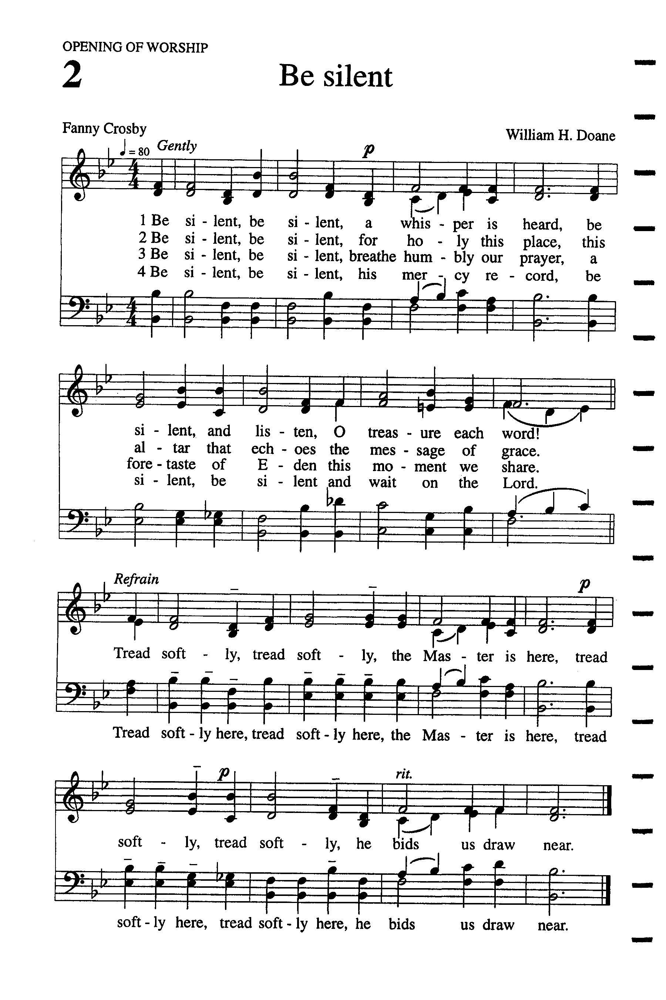

|
|
|
|
1 Be silent, be silent, Refrain: 2 Be silent, be silent, 3 Be silent, be silent, 4 Be silent, be silent, Timeless Truths |
617当肃静恭听
1.当肃静,当肃静,恭听主声音,
当肃静,务恭听,字字是宝训! 轻步走,轻步走,因主在这里, 轻步走,轻步走,主前献诚意. 2.当肃静,当肃静,因这是圣地, 这圣所常回响主恩典信息. 轻步走,轻步走,因主在这里, 轻步走,轻步走,主前献诚意. 3.当肃静,当肃静,谨记主恩?, 当肃静,当肃静,耐心等候主. 轻步走,轻步走,因主在这里, 轻步走,轻步走,主前献诚意.
|
|
https://www.mred365.cn/szxg/7620.html https://hymnary.org/tune/be_silent_be_silent_doane
 |
|
|
|
|

https://youtu.be/uF_7W3fWjYs -
https://youtu.be/C3OKqyNI5X4
| Text: | Tread Softly |
| Author: | Fanny J. Crosby |
| Tune: | [Be silent, be silent, A whisper is heard] |
| Composer: | W. H. Doane |

Tune Information
| Title: | [Be silent, be silent) Doane) |
| Composer: | W. Howard Doane |
| Meter: | 6.5.6.5 D |
| Incipit: | 55311 53555 55611 |
| Key: | B♭ Major |
| Copyright: | Public Domain |